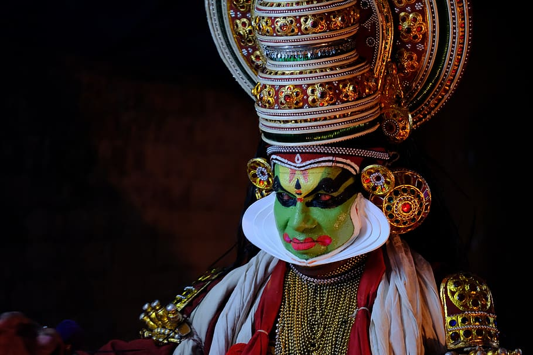
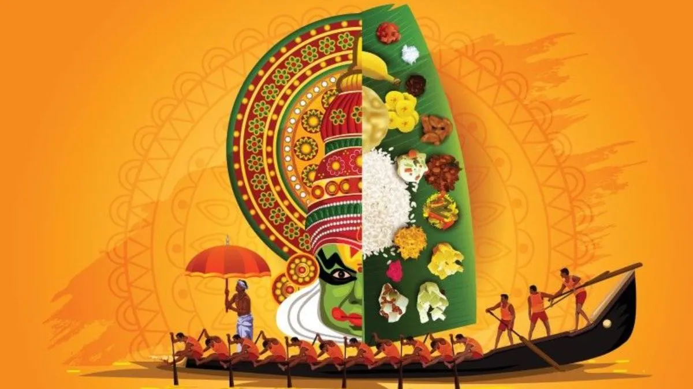

Our mission is to bring the spirit of Malayali-ness to the streets of Madrid. We are dedicated to uniting all Keralites in the region, ensuring that no matter how far we are from home, our culture and community remain close at heart
From festive Onam Sadhya and Vishu celebrations to Christmas gatherings, sports tournaments and many more..
View GalleryJoin our growing family!
Membership Form
Kathakali is one of the oldest theater forms in the world...
